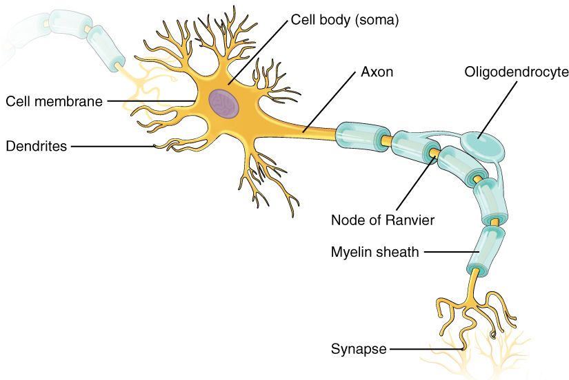
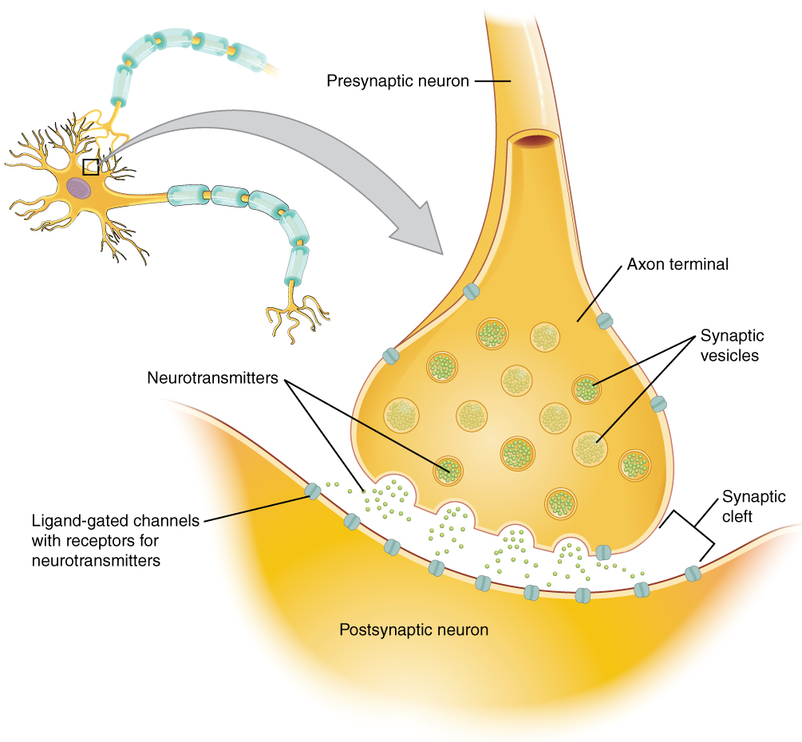
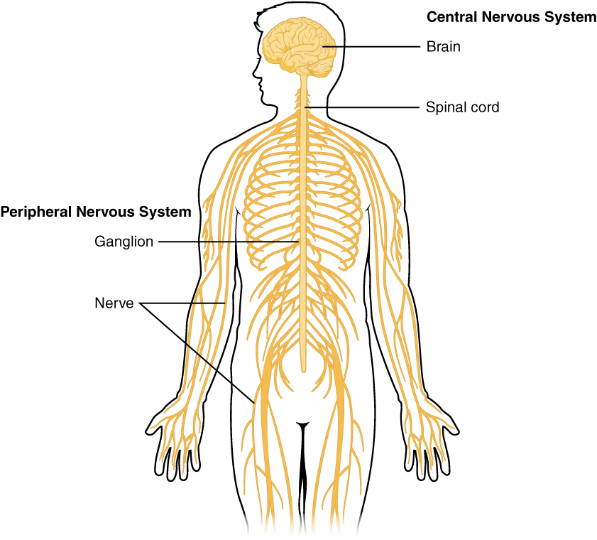

Biopsychology
Every thought you have ever had, every feeling, every memory, and every decision is, at bottom, a physical event — a pattern of electricity and chemistry playing out across cells. Biopsychology is the branch of the field that takes that idea seriously and asks how the nervous system and the glands that flavor it give rise to mind and behavior. This chapter starts with the single working unit, the neuron, and follows the signal outward: how one cell fires, how it whispers to the next across a synapse, how those cells are wired into the great trunk lines of the nervous system, how the brain organizes them into regions with jobs, and how a slower chemical messaging service — the endocrine system — sets the body's background mood. Understand these pieces and the rest of psychology stops feeling like magic and starts feeling like biology.
By the end of this chapter you can
- Label the major parts of a neuron and explain what each part does.
- Describe the resting potential and walk through the phases of the action potential.
- Explain how a signal crosses the synapse and name the major neurotransmitters and their roles.
- Distinguish drugs that act as agonists from those that act as antagonists.
- Diagram the divisions of the nervous system: central vs peripheral, somatic vs autonomic, and sympathetic vs parasympathetic.
- Identify the hindbrain, midbrain, and forebrain and the jobs of the four cortical lobes.
- Explain how the endocrine system signals with hormones and how that differs from neural signaling.
- Connect real cases and researchers — Phineas Gage, Broca, Wernicke, Selye — to the brain and body systems they illuminated.
Section 1The neuron

The parts of a neuron
The neuron is the basic information-processing cell of the nervous system, and the whole of psychology — perception, memory, emotion, movement — runs on roughly 86 billion of them wired together. A neuron is built to do three things in sequence: receive a signal, decide whether to pass it on, and send it. The receiving end is a spray of branching fibers called dendrites. They funnel incoming signals toward the cell body (the soma), which holds the nucleus and tallies up everything arriving. If the total is large enough, the signal leaves down a single long fiber, the axon, and finishes at the swollen terminal buttons, where it will be handed off to the next cell.
Many axons are wrapped in a fatty white insulation called the myelin sheath, laid down by supporting cells. Myelin is not continuous; it comes in segments separated by bare gaps, the nodes of Ranvier, and this segmentation is precisely what makes myelinated axons fast. Neurons do not work alone, either. They are vastly outnumbered by glial cells (glia), the support staff that build myelin, feed neurons, clean up debris, and hold the whole structure in place. For a long time glia were treated as mere packing material; we now know they actively shape how signals travel.
| Part | Job |
|---|---|
| Dendrites | Receive incoming signals from other neurons and carry them toward the cell body |
| Cell body (soma) | Holds the nucleus; integrates all incoming signals to decide whether to fire |
| Axon | Single long fiber that carries the outgoing signal away from the cell body |
| Myelin sheath | Fatty insulation that speeds conduction; gaps are the nodes of Ranvier |
| Terminal buttons | Axon tips that release neurotransmitter onto the next cell |
| Glial cells | Support cells that myelinate, nourish, and protect neurons |
How a neuron fires: the action potential
At rest, a neuron is a tiny charged battery. It actively pumps ions across its membrane so that the inside sits at about −70 millivolts relative to the outside — a state called the resting potential. The cell is polarized, primed and waiting. Incoming signals nudge that voltage up or down. If enough excitatory input arrives to push the membrane past a tipping point of roughly −55 mV — the threshold — the neuron fires.
Firing is the action potential: a brief electrical spike that races down the axon. It unfolds in a fixed sequence. Voltage-gated channels fling open and positively charged sodium (Na+) ions rush in, flipping the inside briefly positive — this is depolarization. A heartbeat later those channels close and potassium (K+) ions flow out, dragging the voltage back down — repolarization — often overshooting into a short refractory period during which the cell cannot fire again. Then the ion pumps restore the resting balance and the neuron is ready to go once more. Crucially, the action potential is all-or-none: a neuron either fires a full spike or it does not fire at all, like a gun trigger. It cannot fire a “half” signal, so the brain codes the strength of a stimulus not in the size of each spike but in how fast and how many neurons fire.
In myelinated axons the spike does not crawl smoothly down the fiber — it leaps from one node of Ranvier to the next, a shortcut called saltatory conduction (from the Latin saltare, to jump). This is why myelin matters so much: it can multiply conduction speed many times over, letting a signal travel from your spinal cord to your toe in a fraction of a second.
- A neuron receives at its dendrites, integrates in the cell body, and sends down its axon to the terminals.
- The resting potential (about −70 mV) is a primed, polarized state; crossing threshold triggers firing.
- The action potential is an all-or-none spike: Na+ in (depolarize), K+ out (repolarize).
- Myelin enables fast saltatory conduction; when it is damaged, signaling and behavior suffer.
Section 2Neurotransmitters

Crossing the synapse
Neurons almost never touch. Between the terminal of one and the dendrite of the next lies a microscopic gap, the synaptic cleft, and the whole junction is called the synapse. The electrical action potential cannot jump this gap, so the message is converted into a chemical one. When the spike reaches the terminal buttons, it triggers tiny sacs called vesicles to dump their cargo — molecules of neurotransmitter — into the cleft. Those molecules drift across and dock onto receptors on the receiving neuron, each receptor shaped to fit a particular transmitter like a lock fits a key.
The effect can be excitatory (nudging the next neuron toward firing) or inhibitory (nudging it away). Either way, the signal must be switched off promptly, or the receptor would keep firing. The body does this two ways: enzymes in the cleft chemically break the transmitter apart, or the sending neuron vacuums the leftover molecules back up to reuse them — a process called reuptake. Reuptake will matter enormously in a moment, because it is exactly the step that many psychiatric drugs target.
The major neurotransmitters
Dozens of neurotransmitters have been identified, but a handful do most of the work that intro psychology cares about. Each is loosely tied to particular functions and to particular disorders when it runs too high or too low.
| Neurotransmitter | Associated with | When dysregulated |
|---|---|---|
| Acetylcholine (ACh) | Muscle movement, learning, memory | Loss is linked to Alzheimer's disease |
| Dopamine | Reward, motivation, movement, pleasure | Low in Parkinson's; overactivity linked to schizophrenia |
| Serotonin | Mood, sleep, appetite | Low levels linked to depression |
| Norepinephrine | Alertness, arousal, the stress response | Tied to anxiety and mood |
| GABA | The brain's main inhibitory transmitter; calming | Low activity linked to anxiety, seizures |
| Glutamate | The brain's main excitatory transmitter; learning | Excess can overexcite and damage neurons |
| Endorphins | Pain relief, pleasure (the body's natural opioids) | Mimicked by morphine and heroin |
How drugs act: agonists and antagonists
Nearly every drug that changes mind or behavior does so by meddling with this chemical hand-off, and the effects sort into two broad camps. An agonist is any substance that increases a neurotransmitter's action — it might mimic the transmitter and bind its receptor directly, cause more of it to be released, or block reuptake so the transmitter lingers longer in the cleft. An antagonist does the opposite: it blocks or reduces a transmitter's action, often by plugging the receptor so the real transmitter cannot dock. The distinction is the heart of psychopharmacology. SSRIs, the most common antidepressants, are agonists that block the reuptake of serotonin, leaving more of it available at the synapse. Many antipsychotics are dopamine antagonists that dampen an overactive dopamine system. Caffeine, nicotine, opioids, and antihistamines all earn their effects by tilting one of these levers.
- Signals cross the synapse chemically: vesicles release neurotransmitter that binds receptors on the next neuron.
- The signal is cleared by enzymatic breakdown or reuptake back into the sending neuron.
- Key transmitters include dopamine, serotonin, acetylcholine, GABA, glutamate, and endorphins, each tied to specific functions and disorders.
- Agonists increase a transmitter's action; antagonists block it — the basis of most psychiatric drugs.
Section 3The nervous system

Central and peripheral
All those neurons are organized into a two-part scheme. The central nervous system (CNS) is the brain and the spinal cord — the command center where information is integrated and decisions are made. Everything else — the vast web of nerves threading out to muscles, skin, and organs — is the peripheral nervous system (PNS), whose job is to carry messages back and forth between the CNS and the rest of the body. Sensory neurons run inward to the CNS; motor neurons run outward to muscles and glands. The spinal cord is not just a cable; it can run simple reflexes on its own, which is why your hand yanks off a hot stove before your brain has even registered the pain.
Somatic and autonomic
The peripheral system itself divides again by whether its actions are voluntary. The somatic nervous system handles the things you do on purpose: it carries sensory information in and sends commands out to the skeletal muscles you control — lifting a cup, typing, walking. The autonomic nervous system runs the housekeeping you never think about: heartbeat, digestion, breathing rate, pupil size, sweating. “Autonomic” and “automatic” are worth hearing as cousins, because this system manages the body on autopilot.
Sympathetic and parasympathetic
The autonomic system has two opposing branches that work like a gas pedal and a brake. The sympathetic nervous system is the accelerator — it mobilizes the body for action, the famous fight-or-flight response. Faced with a threat, it speeds the heart, dilates the pupils, dumps glucose into the blood, and shunts resources to the muscles, all in an instant. The parasympathetic nervous system is the brake, sometimes called rest-and-digest. Once the danger passes, it slows the heart, restarts digestion, and returns the body to a calm baseline. The two are almost always both active, and health is the balance between them; problems arise when the sympathetic accelerator is held down too long, as in chronic stress.
| Organ | Sympathetic (“fight-or-flight”) | Parasympathetic (“rest-and-digest”) |
|---|---|---|
| Heart | Speeds up | Slows down |
| Pupils | Dilate (widen) | Constrict (narrow) |
| Digestion | Inhibited | Stimulated |
| Lungs | Airways widen | Airways narrow |
| Adrenal glands | Release stress hormones | — |
| Overall effect | Mobilize energy for action | Conserve energy, restore calm |
- The CNS (brain + spinal cord) integrates; the PNS carries signals to and from the body.
- The somatic system controls voluntary skeletal muscle; the autonomic system runs involuntary organs.
- The sympathetic branch mobilizes fight-or-flight; the parasympathetic branch restores rest-and-digest.
- Health is the balance between the two; chronic sympathetic activation is the physiology of stress.
Section 4The brain

Hindbrain, midbrain, forebrain
One useful way to read the brain is from the bottom up, oldest structures first. The hindbrain sits where the spinal cord enters the skull and runs the machinery of staying alive. It includes the medulla (heartbeat and breathing), the pons (a relay involved in sleep and arousal), and the cerebellum (“little brain”), which coordinates balance, posture, and smooth, practiced movement. The small midbrain sits above it, handling reflexive orienting to sights and sounds and helping regulate movement and arousal. Together the midbrain and hindbrain — all but the cerebellum, which attaches behind it — make up the brainstem, the survival core.
The forebrain is the newest and largest region, and it is where the psychology lives. Deep inside sit structures we return to often: the thalamus, a sensory relay station routing incoming signals to the right places; the hypothalamus, which governs hunger, thirst, body temperature, and the endocrine system; and the limbic system — including the amygdala (emotion, especially fear) and the hippocampus (forming new memories). Draped over all of it is the wrinkled outer layer that makes us most human, the cerebral cortex.
The four cortical lobes
The cerebral cortex is the thin, folded sheet of neurons covering the brain, split into two hemispheres and divided into four lobes, each with characteristic jobs. The frontal lobe, at the front, is the seat of planning, judgment, personality, and voluntary movement (its rear strip is the motor cortex). It also holds Broca's area, essential for producing speech. The parietal lobe, just behind it, processes touch, temperature, and body position along its somatosensory cortex. The temporal lobe, at the side, handles hearing and language comprehension — home to Wernicke's area — and helps with memory. The occipital lobe, at the very back, is devoted almost entirely to vision.
| Lobe | Location | Main functions |
|---|---|---|
| Frontal | Front | Planning, judgment, personality, voluntary movement (motor cortex), speech (Broca's area) |
| Parietal | Top rear | Touch, temperature, pain, body position (somatosensory cortex) |
| Temporal | Sides | Hearing, language comprehension (Wernicke's area), memory |
| Occipital | Back | Vision |
The cortex also shows lateralization: the two hemispheres are not identical. For most people, language is concentrated in the left hemisphere, while the right leans toward spatial and holistic processing. And each hemisphere controls the opposite side of the body — the left motor cortex moves your right hand. None of this is rigidly fixed, though. The brain shows remarkable plasticity: after injury or with practice, healthy regions can take over lost functions, especially in the young.
- The hindbrain (medulla, pons, cerebellum) and midbrain form the brain's survival core; the brainstem is that core apart from the cerebellum.
- The forebrain holds the thalamus, hypothalamus, limbic system (amygdala, hippocampus), and cortex.
- The four lobes are frontal (planning, movement, speech), parietal (touch), temporal (hearing, language), and occipital (vision).
- Broca's area, Wernicke's area, and Phineas Gage each tie a specific function to specific cortical tissue; the brain remains plastic.
Section 5The endocrine system

Glands and hormones
The nervous system is not the body's only messaging service. The endocrine system is a network of glands that release chemical messengers called hormones directly into the bloodstream, which then carries them to distant organs. Where a neuron speaks privately to the one cell across its synapse, a gland broadcasts to the whole body at once, and any cell with the right receptor will answer. The master gland is the pituitary, tucked under the brain and taking orders from the hypothalamus — the point where the nervous and endocrine systems shake hands. The pituitary in turn directs the others.
| Gland | Key hormone(s) | Main effect |
|---|---|---|
| Pituitary | Growth hormone; releasing hormones | The “master gland” — directs other glands and controls growth |
| Thyroid | Thyroxine | Sets metabolic rate and energy level |
| Adrenal glands | Adrenaline (epinephrine), cortisol | Drive the stress response; arousal and energy |
| Pancreas | Insulin, glucagon | Regulate blood sugar |
| Gonads (ovaries/testes) | Estrogen, testosterone | Reproduction and sex characteristics |
| Pineal | Melatonin | Regulates sleep and the daily body clock |
Hormones versus neural signaling
Both systems use chemical messengers — adrenaline is a hormone in the blood and a transmitter-like signal in the brain — but they operate on very different timescales, and the contrast is the point. Neural signaling is fast, precise, and brief: an action potential fires in a thousandth of a second, targets one specific cell, and is over almost as soon as it began. Hormonal signaling is slow, diffuse, and lasting: a hormone may take seconds to minutes to reach its target, it washes over the entire body, and its effects can persist for hours — think of how long it takes to calm down after a fright, long after the danger is gone. That lingering quality is what makes hormones the substrate of mood and long-running states rather than split-second reactions.
| Feature | Neural signaling | Hormonal signaling |
|---|---|---|
| Messenger | Neurotransmitter | Hormone |
| Route | Across a synapse to one cell | Through the bloodstream to the whole body |
| Speed | Milliseconds | Seconds to minutes |
| Duration | Brief | Long-lasting |
| Precision | Targeted, private | Broadcast, diffuse |
- The endocrine system is a network of glands that release hormones into the bloodstream.
- The hypothalamus and pituitary gland link the nervous and endocrine systems and direct the other glands.
- Compared with neural signals, hormones are slower, more diffuse, and longer-lasting — the chemistry of mood and stress.
- Selye's work ties chronic stress and cortisol to real damage to health.
The chapter in one breath
- The neuron receives at its dendrites, integrates in its cell body, and sends down its axon; myelin speeds the signal.
- Crossing threshold triggers an all-or-none action potential — Na+ in to depolarize, K+ out to repolarize.
- Signals cross the synapse as neurotransmitters that bind receptors and are then cleared by reuptake or enzymes.
- Drugs are agonists (boost a transmitter) or antagonists (block it); SSRIs and antipsychotics work this way.
- The nervous system divides into central vs peripheral, somatic vs autonomic, and sympathetic (fight-or-flight) vs parasympathetic (rest-and-digest).
- The brain runs bottom-up from hindbrain and midbrain survival cores to the forebrain, whose cortex has four lobes: frontal, parietal, temporal, occipital.
- The endocrine system signals with hormones through the blood — slower, more diffuse, and longer-lasting than neural signals — and drives the stress response.
ReferenceWords worth knowing
A quick reference for the terms in this chapter — skim it now, or circle back whenever a word trips you up.
- Action potential
- The brief, all-or-none electrical spike a neuron fires and sends down its axon.
- Agonist
- A drug or substance that increases a neurotransmitter's action — by mimicking it, boosting its release, or blocking reuptake.
- Antagonist
- A drug or substance that blocks or reduces a neurotransmitter's action, often by occupying its receptor.
- Autonomic nervous system
- The peripheral division that controls involuntary functions like heartbeat and digestion; split into sympathetic and parasympathetic branches.
- Axon
- The single long fiber that carries a neuron's outgoing signal away from the cell body.
- Central nervous system (CNS)
- The brain and spinal cord, where information is integrated and decisions are made.
- Cerebral cortex
- The wrinkled outer sheet of the brain, divided into two hemispheres and four lobes, responsible for higher functions.
- Dendrite
- A branching fiber that receives incoming signals and carries them toward the cell body.
- Endocrine system
- The network of glands that release hormones into the bloodstream to signal distant organs.
- Glial cell
- A support cell of the nervous system that myelinates, nourishes, and protects neurons.
- Hormone
- A chemical messenger released by an endocrine gland into the bloodstream.
- Myelin sheath
- The fatty insulation around many axons that speeds conduction; its gaps are the nodes of Ranvier.
- Neuron
- The basic information-processing cell of the nervous system.
- Neurotransmitter
- A chemical released across a synapse to carry a signal to the next neuron.
- Parasympathetic nervous system
- The autonomic branch that calms the body and restores it — “rest-and-digest.”
- Peripheral nervous system (PNS)
- All the nerves outside the brain and spinal cord that connect the CNS to the body.
- Resting potential
- The neuron's charged, polarized resting state, about −70 mV inside relative to outside.
- Reuptake
- The reabsorption of leftover neurotransmitter back into the sending neuron.
- Somatic nervous system
- The peripheral division that carries sensory input and controls voluntary skeletal muscle.
- Sympathetic nervous system
- The autonomic branch that mobilizes the body for action — “fight-or-flight.”
- Synapse
- The junction between two neurons, including the tiny synaptic cleft the signal crosses.
- Threshold
- The level of stimulation (about −55 mV) a neuron must reach to fire an action potential.